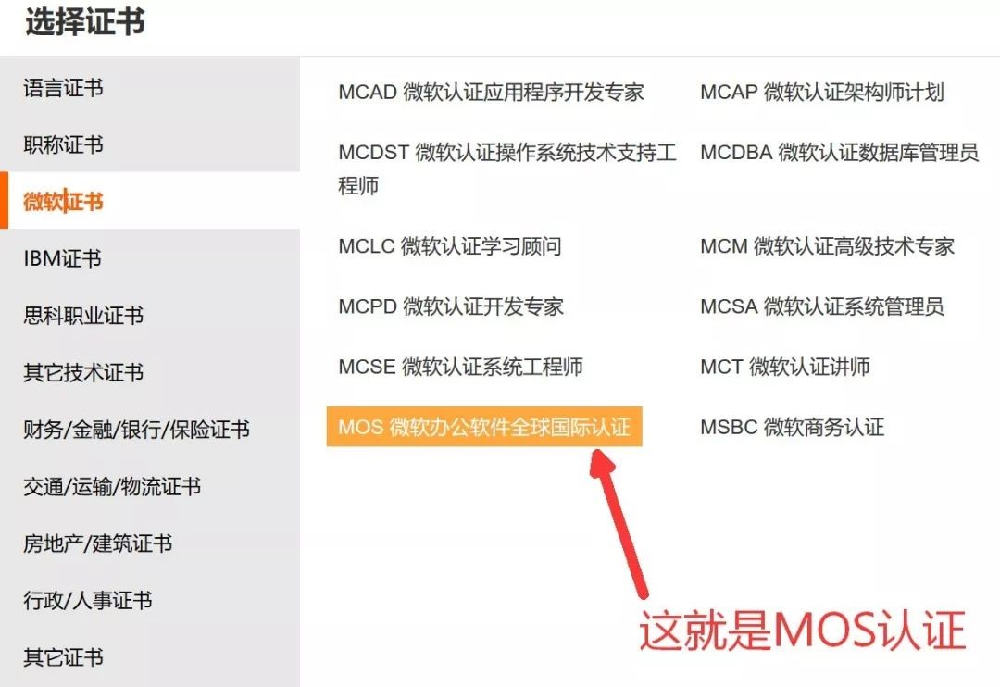
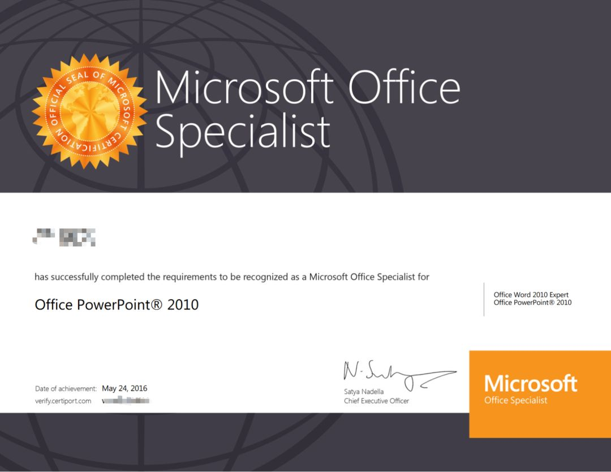
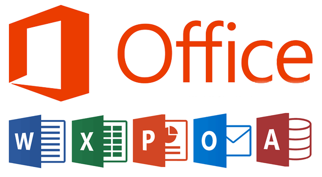
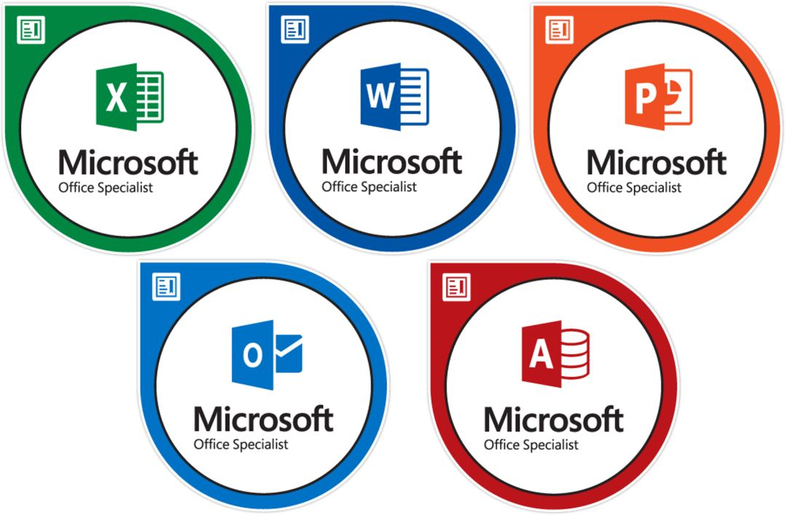
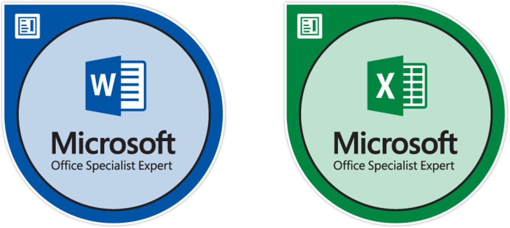
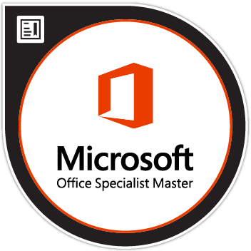
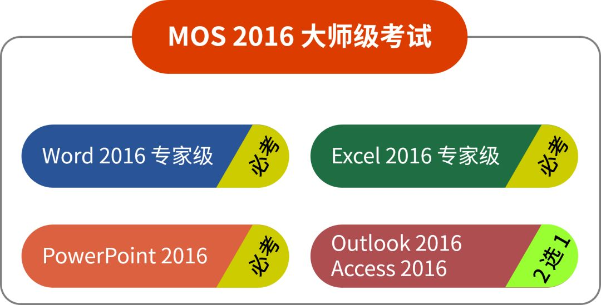
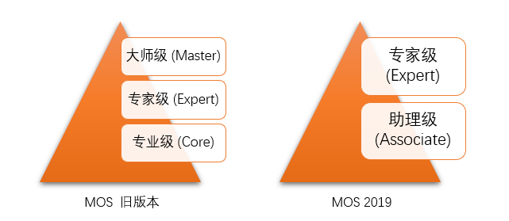
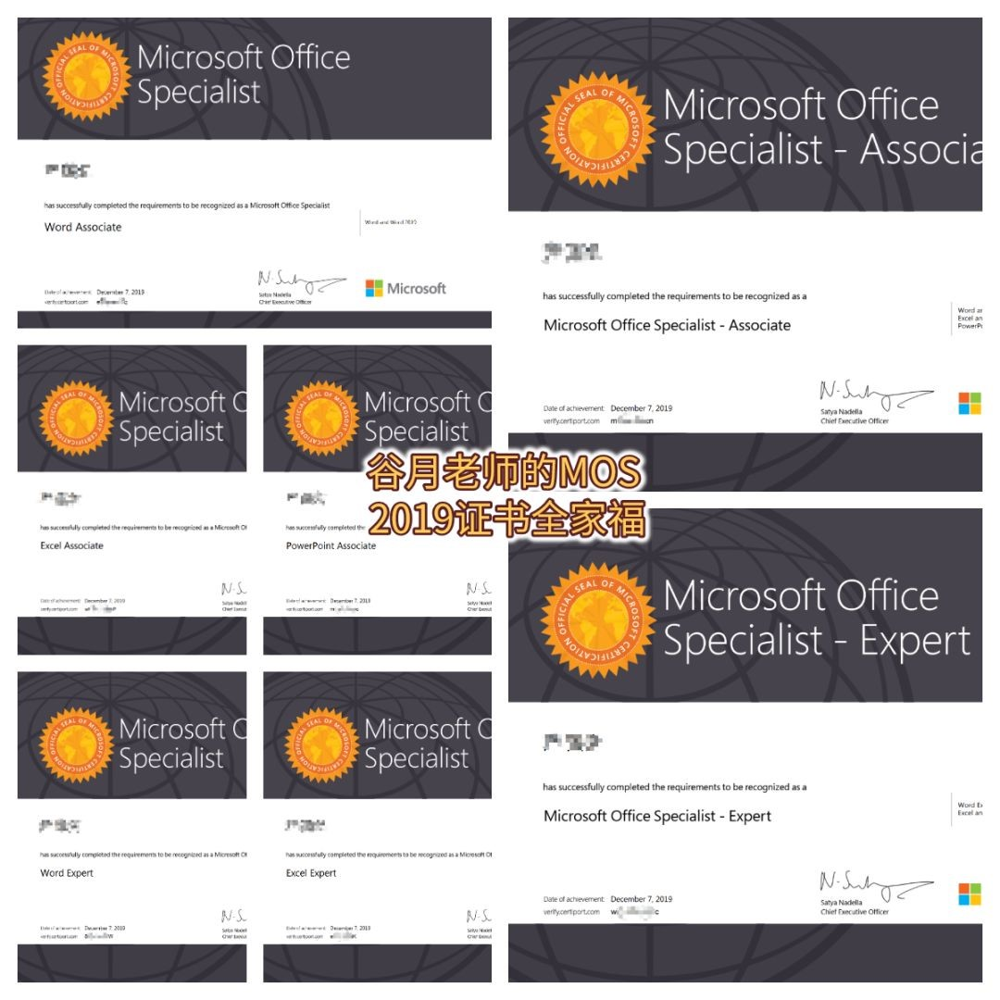

Hi，大家好，我是专门帮你提升职场竞争力、让你工作效率加倍的谷月老师，感谢你的阅读😊。

越来越多的大学生和职场人报名参加 MOS 认证考试，提升了自身的职业竞争力，在职业生涯中取得了先发优势，
如果你虚度业余时间，不努力学习提升自己，职业竞争力就会下降，使你在求职、升职、加薪的激烈竞争中被提前淘汰。
而取得 MOS 认证，会实实在在地提升你的职业竞争力，让你变得更加优秀、更加胜任工作。
在这篇文章中，谷月老师将为大家详细阐释，什么是 MOS 考试，它考哪些科目、什么内容。
一、什么是 MOS 认证考试？
1. 它的全称是什么？
MOS 认证考试的英文全称是 Microsoft Office Specilist Certification Exam，即 “微软 Office 专员认证考试”。
MOS 认证考试进入中国以后，发布者给它起了一个高大上的中文全称：“微软办公软件国际认证考试”。

2. 它是谁发布的？
它是由微软（Microsoft）和思递波（Certiport，2012 年被 Pearson VUE 收购）联合发布的，微软负责出题，思递波负责在全球组织考试、颁发证书。
3. 它的适用范围是？
MOS 认证考试从诞生那天开始，就打上了全球化的烙印。它在全球 148 个国家和地区受到认可，可以用 26 种语言考试，每种语言的考试成绩都有同样的效力。
4. 谁认可 MOS 证书？
MOS 证书得到了以下单位的认可：
- 国内外众多企业（尤其是世界五百强），
- 大学（主要是美国大学），
- 学术组织（例如美国教育委员会 American Council on Education、美国大专院校测验研究中心 American College Test），
- 权威行业组织（例如国际科技教育学会 International Society for Technology in Education、全球计算机产业协会 CompuTIA、美国国家技能标准 National Standard Skills System 等）
持有 MOS 证书，对你的求职、晋升或留学，具有巨大的帮助。
二、MOS 认证考试考什么？
1. 它考什么软件？
顾名思义，它考查微软 Office，包括 Word，Excel，PowerPoint，Outlook，Access 五件套。

2. 它有哪些版本？
MOS 认证考试有三个版本：2013、2016、2019。与微软 Office 软件的版本保持一致。
最流行的版本是 MOS 2016。我们推荐考生直接报考 2016 版。
MOS 2019 已经发布，但是目前备考资料不完善，而且价格也比较贵。建议考生优先选择 2016 版。
MOS 2013 的考试形式很复杂，通过率不高，而且也有点过时，因此我们不推荐 2013 版。
3. MOS 2016 有哪几个等级？
MOS 2016 认证考试有三个等级。从低到高排序如下：
- 专业级（Core，也称为核心级、标准级）
- 专家级（Expert）
- 大师级（Master）
4. MOS 2016 专业级（核心级）考什么？
专业级（核心级）考试科目有 5 个：Word、Excel、PowerPoint、Outlook、Access。换句话说，每个软件对应一门考试，每门考试只考一个软件。
每通过一门考试，就会获得对应科目的专业级证书。

专业级考试考查运用 Office 软件的基本功能解决日常工作问题的能力。至于每门考试的高频考点，谷月老师会在后续的文章中阐述。
实际上，专业级考试涉及的知识点和技能树都很简单，名叫 “专业级”，但是并没你想象的那么专业。谷月老师认为，把它们称作“核心级” 比“专业级”更合适。
5. MOS 2016 专家级考什么？
专家级考试科目有 2 个：Word Expert、Excel Expert。
每通过一门考试，就会获得对应科目的专家级证书。

Word 和 Excel 的共同特点是：功能非常多，并且可以大致分成 “基本功能” 和 “高级功能” 两类。
基本功能由专业级考试来考查，考生掌握了基本功能，可以完成基本工作任务，但是整体来说，效率较低。至于高级功能，则是由专家级考试来考查。这些高级功能，谷月老师会另外写文章介绍。
6. MOS 2016 的 Word 和 Excel 要考专家级吗？
我们推荐直接报考 Word 和 Excel 的专家级考试。原因有三：
a. Word 和 Excel 的专业级考试比较简单，没必要专门花钱去学习考证。而专家级考试考查的高级功能，有助于考生高效地完成工作，实用性很强，值得学习、考证。
b. 你如果找谷月老师报名专家级考试，谷月老师会赠送给你培训课程，这个课程已经涵盖了专业级考试的内容。
c. 通过这两门专家级考试，是获得大师级认证的必要条件。
7. MOS 2016 的大师级考什么？
大师级是最高的级别，但是，大师级不是一门考试，而是一张证书。

只要你考过指定的 4 门考试（Word Expert、Excel Expert、PowerPoint、Outlook，最后一门可以用 Access 代替），并且获得对应的证书，微软和思递波就会自动额外发给你大师级证书。

我们推荐考生直接报考大师级 4 门考试，毕竟艺多不压身，而且大师级证书体现了你操作 Office 软件解决工作问题的综合能力。
8. 使用 Office 365，能考 MOS 吗？
最新推出的 MOS 2019 的官方全称是 Microsoft Office Specialist: Associate (Office 365 and Office 2019) 和 Microsoft Office Specialist: Expert (Office 365 and Office 2019)。
从官方全称可以看出，MOS 2019 针对 Office 365 和 Office 2019，换句话说，Office 365 用户不必再纠结自己使用的软件版本是否影响参加 MOS 考试，直接报名 MOS 2019 就可以啦。
9. MOS 2019 有几个等级？
从官方全称可以看出，MOS 2019 认证考试有 2 个等级。从低到高排序如下：
- 助理级（Associate），对标 MOS 2016 的专业级（核心级）
- 专家级（Expert），对标 MOS 2016 的专家级和大师级。

注意：MOS 2019 没有大师级。
10. MOS 2019 的助理级（Associate）考什么？
助理级的考试科目有 4 个：Word、Excel、PowerPoint、Outlook。
每通过一门考试，就会获得对应科目的专家级证书。
考过其中任意 3 门考试，就可以额外获得一张 MOS Associate 证书。这样，总共是 4 张证书。
下图展示了谷月老师获得的 Microsoft Office Specialist: Associate (Office 365 and Office 2019)证书全家福。
11. MOS 2019 的专家级（Expert）考什么？
专家级的考试科目有 3 个：Word Expert、Excel Expert、Access Expert。
**注意：Access 只有专家级考试，没有助理级考试。
每通过一门考试，就会获得对应科目的专家级证书。
考过其中任意 2 门考试，再加上 MOS Associate 证书，就可以额外获得一张 MOS Expert 证书。换句话说，要拿到 MOS 2019 Expert 证书，需要通过 5 门考试。
下图展示了谷月老师获得的 Microsoft Office Specialist: Expert (Office 365 and Office 2019)证书全家福。

三、总结
谷月老师在这篇文章中介绍了 MOS 认证考试，重点介绍了最流行的 MOS 2016 版和刚上市的 MOS 2019 版。目前 （2020年）MOS 2016 版是最适合报考的。欢迎小伙伴们找谷月老师报名考试哟~
扩展阅读
MOS 2016 中英文版考试课程索引与练习素材下载
MOS 2019 中英文版考试课程索引与练习素材下载
学 MOS 五分钟，少加班两小时
MOS 认证考试的中文全称，
是微软办公软件国际认证考试，
它是微软公司针对自家 Office 软件推出的考试，
具有无可比拟的权威性和含金量，
也是世界五百强招聘考核员工的重要标准。
了解 MOS 考试：
--------------
谷月老师拥有博士学位，
多年来从事 MOS 考试的研究、培训、营销，
具有丰富的经验，
欢迎找谷月老师咨询报名哟~
谷月老师微信号：kukmoon
或微信识别以下二维码加谷月老师
--------------